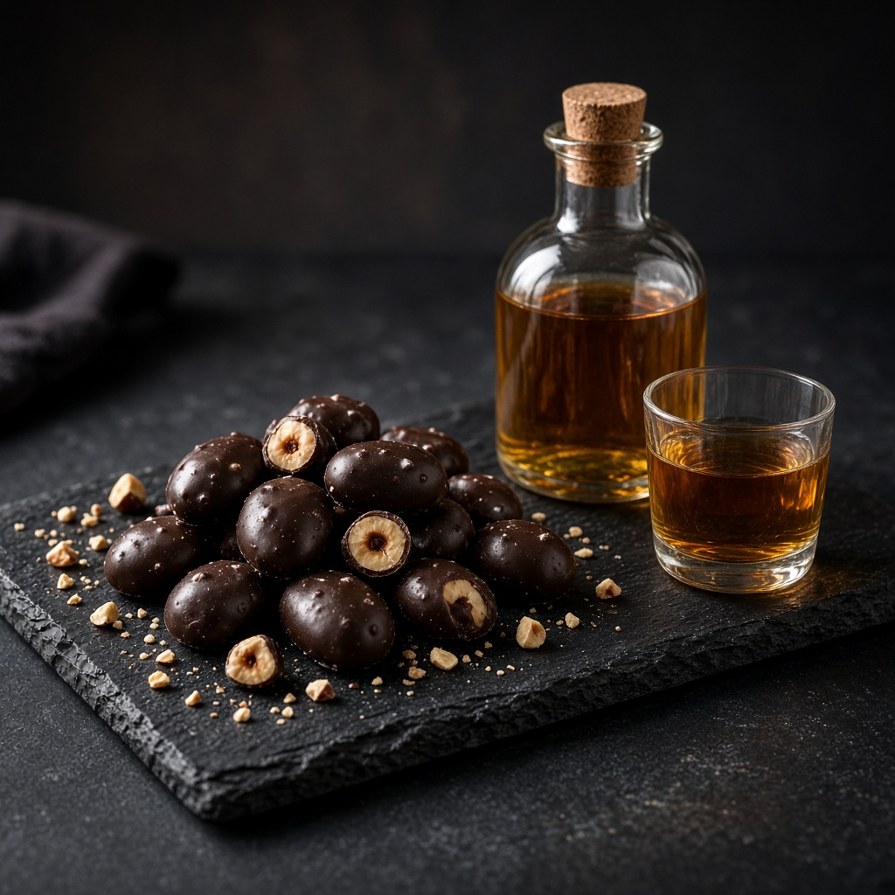

Подаруйте дерево, а не просто річ
Власне фундучне дерево в саду у Снятині — з іменем, фото та смаками, що приходять до вас упродовж цілого року.
Підписка на дерево на цілий рік
Подарунок, що не стоїть на полиці, а росте, цвіте й дає плоди.
Ви обираєте частку врожаю — і ми закріплюємо за вашим одержувачем одне з 150 дерев нашого саду. Воно отримує імʼя, ярлик із фотографією та місце у нашій книзі саду.
Далі — кілька разів на рік до власника приїжджають посилки з урожаю: чищені горіхи, фундукова паста, горіхи в шоколаді, а на зимові свята — адвент-календар. Подарунок, який нагадує про вас щоразу, коли відкривається нова коробка.
Для яких подій: день народження, весілля, річниця, народження дитини, Новий рік, подяка колегам або партнерам, корпоративні подарунки.

Чотири кроки до власного дерева
Оберіть частку дерева
Третина, половина чи три чверті врожаю вашого дерева — від цього залежить, скільки смаків ви зможете в нього вмістити.
Назвіть дерево
Імʼя дерева і привітання — на ваш вибір. Воно потрапить на ярлик і сертифікат.
Отримайте набір
Ми надішлемо подарункову коробку з сертифікатом і фото дерева, або ви заберете її в саду.
Смакуйте рік
Протягом року — посилки з урожаєм, фотозвіти з саду і запрошення приїхати до свого дерева.

Дерево з власним імʼям
Кожне дерево отримує ярлик ручної роботи з назвою та фотографією.
Ярлик висить на гілці у саду, а його копію разом із сертифікатом ви отримаєте в подарунковій коробці. Назвіть дерево так, як забажаєте: на честь іменинника, дитини, родини або жартома.
Спробуйте — введіть імʼя в формі замовлення нижче, і ярлик оновиться тут.
Один рік — багато подарунків
Що саме отримати — ви обираєте самі в конструкторі нижче. Ось як складається рік власника дерева.
Сертифікат і ярлик
Подарункова коробка, сертифікат власника, ярлик з імʼям дерева та його фотографією.
Фотозвіт цвітіння
Листівка й фото вашого дерева, коли воно вкривається жовтими сережками.
Чищений фундук
Перший урожай — висушені й обережно очищені горіхи свіжого збору.
Фундукова паста
Густа паста з обсмажених горіхів — без пальмової олії, лише фундук та крапля солі.
Адвент-календар «24 дні»
24 віконця з горіховими сюрпризами: смажений фундук, у шоколаді, у карамелі, з прянощами.
Горіхи в шоколаді
Фундук у темному шоколаді — ідеальна солодка пауза наприкінці зими.
Настоянка на фундуці
Невелика пляшка авторської фундукової настоянки — для дорослих одержувачів.

Адвент-календар із саду
24 дні до Різдва — 24 фундукові сюрпризи, зібрані з урожаю вашого дерева.
Кожного дня — нова маленька радість: від простого смаженого фундука до горіхів у темному шоколаді, у карамелі чи з прянощами. Календар упаковано в екологічний картон, а на звороті — історія вашого дерева.
З одного дерева — багато смаків



Оберіть частку дерева — і наповніть її смаками
Підписки відрізняються лише тим, яку частку врожаю свого дерева ви резервуєте. А що саме з нього зробити — вирішуєте ви.
- Дерево з імʼям і ярликом
- Сертифікат і фото дерева
- Фотозвіт із саду навесні
- Подарункова коробка
- Усе з пакета «Класичний»
- Іменна табличка біля дерева
- Преміальна дерев’яна коробка
- Листівка, написана від руки
- Усе з пакета «Гурман»
- Візит у сад для двох осіб
- Особисте фото біля свого дерева
- Імʼя власника у книзі саду
Ціна вказана за 100 г (рідини — за 100 мл). У колонці «Фундука» — скільки чистого ядра йде на цю кількість. Сума не може перевищити ліміт обраної частки.

Адвент-календар «7 днів фундука»
Тиждень, у якому кожного дня — новий смак фундука. Компактна коробка без сертифіката на дерево: подарунок до свята «на сьогодні».
- 1Фундук у шкаралупі, сирий60 г
- 2Смажений фундук30 г
- 3Фундук у темному шоколаді25 г
- 4Фундукова паста30 г
- 5Шоколадна фундукова паста30 г
- 6Фундукова настоянка 18+20 мл
- 7Шоколадно-фундуковий лікер 18+20 мл
Є версія без алкоголю: дні 6 і 7 замінюємо на карамелізований фундук і фундукове печиво.
Оформіть сертифікат
Залиште дані — і ми звʼяжемося, щоб уточнити деталі, оплату й доставку.
- Виготовлення2–3 робочі дні
- ДоставкаНова пошта по Україні
- СамовивізУ саду, Снятин
- ПодарунокМожна надіслати одразу одержувачу
Часті запитання
Це справжнє дерево, яке буде тільки моє?
Так, за одержувачем закріплюється конкретне дерево нашого саду. Воно має ярлик і номер, а ви можете приїхати й побачити його. Юридично це символічне «усиновлення» — майнових прав на землю сертифікат не передає.
Скільки триває підписка?
Сертифікат діє 12 місяців із моменту оформлення. Наступного року ви можете продовжити «усиновлення» того ж дерева — у нас буде знижка для власників.
А якщо урожай буде меншим?
Фундук залежить від погоди. Навіть у «Господарі дерева» ми резервуємо за вами лише три чверті очікуваного врожаю, а решта — це запас на слабкий рік. Якщо ж урожай виявиться меншим, ми докомплектуємо набір горіхами з інших дерев саду — вага у вашій коробці не зміниться.
Чи можна надіслати подарунок одразу одержувачу?
Так. Вкажіть у формі адресу одержувача, текст привітання — і ми надішлемо коробку від вашого імені. Можна також замовити електронний сертифікат у PDF.
Чи можна приїхати до дерева?
Звісно. Візити — за попереднім записом, найкраще у сезон цвітіння (лютий–березень) і збору (вересень–жовтень). У пакеті «Господар дерева» візит уже включено.
Чи підходить це як корпоративний подарунок?
Так, для замовлень від 10 сертифікатів ми пропонуємо брендовані ярлики, спільний «корпоративний» ряд дерев і окремі умови. Напишіть нам.